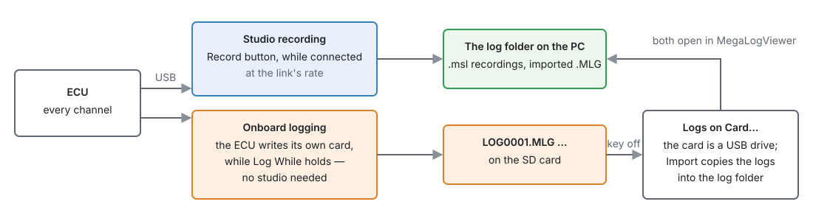
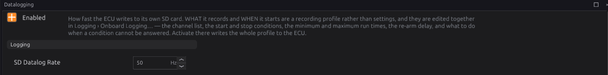

Datalogging and analysis¶
Basic → Intermediate
In one sentence: record what the engine did — from the studio while connected, or on the ECU's own SD card without a laptop — and read the log afterwards, because a log shows what a gauge glimpsed.
Overview¶
Basic

| Studio recording | Onboard logging | |
|---|---|---|
| Needs | the studio connected | an SD card in the ECU |
| Start | Record (toolbar) or Logging ▸ Start Recording, or every session automatically | the Log While condition |
| Rate | whatever the USB link delivers | SD Datalog Rate (default 10 Hz, up to 1000 Hz) |
| File | .msl text, on the PC |
LOG0001.MLG … binary, on the card |
| Best for | tuning sessions | driving without a laptop; catching a rare fault |
Both formats open in MegaLogViewer, the usual tool for reading engine logs. The studio has no log viewer of its own.
Concepts¶
Intermediate
1 · Studio recording¶
- A log is one start to one stop. Nothing rolls over or splits: each Start…Stop is one file, named with the date and time.
- With Record every session on (Preferences ▸ Datalog), a recording starts when the ECU connects and stops when it disconnects. The Record button still stops or starts one at any time.
- Logging ▸ Recording Channels… chooses the columns; leave it empty to record every channel. A recording already running keeps the columns it started with.
- Files are tab-separated text (
.msl), which MegaLogViewer reads directly and any text editor can open. A session cut off mid-write is still a readable file. - Preferences ▸ Datalog also sets the folder and Keep recent logs (0, the default, keeps everything). It shows roughly how much disk an hour takes.
- Logging ▸ Open Logs Folder opens the folder.
2 · Onboard logging¶
The ECU logs to its own card while the key is on (chapter 36), whether a laptop is there or not:
- Configuration ▸ Datalogging: Enabled and SD Datalog Rate.
- Logging ▸ Onboard Logging…: what it records and when — edited together as a profile.

When it logs:
| Setting | Does |
|---|---|
| Log While | starts, and keeps, logging while this is true (an expression, chapter 34) |
| Stop When | stops it; empty means "when Log While stops being true". A separate stop condition gives hysteresis: start above 4000 RPM, stop below 3000 |
| Min log (ms) | once started, log at least this long |
| Min gap (ms) | once stopped, wait this long before a new file |
| Max log (ms) | the longest one file runs (0 = no limit) |
| Re-arm (ms) | after Max log ends a file, wait this long before another; 0 starts the next file straight away |
| If unanswerable | when the condition cannot be worked out (a channel it reads has no value): On (the default — a channel going quiet is when a log is most wanted), Off or Hold |
Both conditions empty is the built-in rule: log whenever the engine turns (above 100 RPM).
What it logs: Choose Channels in the dialog. With no channels chosen the ECU logs the definition's own default set. Fewer channels let a higher rate fit.
3 · Profiles¶
The Onboard Logging dialog is an editor over a list of setups:
- Current (on the ECU) — what the ECU is set to now.
- Templates that come with the firmware — read-only; Duplicate… one to edit it.
- Your profiles — saved on the PC, editable without an ECU.
Choosing one only shows it. Activate writes the one on screen to the ECU (into its working memory, like any change — burn to keep it). Save, Duplicate… and Delete manage your profiles.
4 · Getting logs off the card¶
At key-off the ECU hands the card to USB and it appears as a drive (chapter 36). Logging ▸ Logs on
Card… lists the .MLG files and marks the ones already in the studio's log folder. Import all
new or Import ticked copies them across; Delete ticked removes them from the card, and asks
first if a log has not been imported (the card is then its only copy). Find card… points it at the
card if the computer did not mount it where the studio expected.
5 · Reading a log¶
- Look at the channels together: a lean spike means nothing without the throttle, RPM and load beside it.
- Allow for delay: a wideband reads gas made tens to hundreds of milliseconds earlier (chapter 40).
- Log fast enough for the question: 10 Hz shows a cruise, not a tip-in. For transients and knock, 50–100 Hz.
- Useful sets:
| Question | Channels |
|---|---|
| Fuel | rpm, fuel_load, tps, lambda_1, lambda_target, ve, fuel_corr_stft, fuel_corr_ltft, clt, iat |
| Ignition and knock | rpm, fuel_load, advance, knock_retard, knock_level, knock_count |
| Boost | rpm, map, boost_target, wastegate_duty, tps |
| Faults | dtc_active, dtc_worst_code, battery, key_on, and the channels of the suspect system |
Procedure¶
Basic
A tuning session:
- Connect, and press Record (or set Record every session).
- Do the runs. Press Record again to close the file at a natural break.
- Logging ▸ Open Logs Folder and open the file in MegaLogViewer.
Logging without a laptop:
- Fit an SD card (chapter 36).
- Configuration ▸ Datalogging: tick Enabled, set SD Datalog Rate.
- Logging ▸ Onboard Logging…: pick or build a profile — channels, Log While, timings — and press Activate. Burn.
- Drive. Then, key off, connect USB: Logging ▸ Logs on Card…, Import all new.
Examples¶
Intermediate
Example 1 — only the pulls
Log While tps > 90 and rpm > 2500, Stop When tps < 50, Min log 2000 ms, rate 100 Hz, with the
fuel and knock channels. Each pull becomes one short file.
Example 2 — catch an intermittent stall
Log While rpm > 0, Max log 600000 ms (10 minutes), Re-arm 0: files roll every ten minutes, so the
one with the stall is short enough to find in.
Example 3 — log when something goes wrong
Log While dtc_active > 0, Min log 30000 ms. The card only fills when there is a fault to look at.
Pitfalls and troubleshooting¶
Basic → Advanced
| Symptom | Likely causes | Check |
|---|---|---|
| "Cannot record" | The log folder cannot be written | Preferences ▸ Datalog ▸ Folder |
| No files on the card | Datalogging not enabled; no card; Log While never true; key never on | The Datalogging page; chapter 36 |
| Hundreds of tiny files | The condition flickers | A Stop When with hysteresis; Min log; Min gap |
| Card not listed on the PC | Key on: the ECU has it | Key off; Find card… |
| Log too coarse to see a tip-in | Rate too low | 50–100 Hz, fewer channels |
| Onboard changes lost after power-off | Not burned after Activate | Burn |
Settings reference¶
| Setting | What it does |
|---|---|
SD Datalog Enableddatalog.enabledRange: Off or On Default: Off |
Log raw telemetry to SD while running (needs the ECU to own the card). |
SD Datalog Ratedatalog.rate_hzRange: 1 to 1000 Default: 10 Units: Hz |
How often a record is written to the SD card. Sampled by a dedicated task on the 1 kHz system tick, so 1000 Hz is the ceiling and the period is 1000/rate whole milliseconds — a rate that does not divide 1000 lands on the nearest tick (300 Hz logs every 3 ms, so 333 Hz). HIGH RATES ARE FOR DIAGNOSTICS, NOT FOR DRIVING: what they cost is card space and columns, and the two multiply. Twenty channels at 1 kHz is 151 MB/hour and about 2.5% of the CPU; the standard 364-channel set at the same rate is 2.4 GB/hour and would saturate the card. Pick a small channel set before picking a high rate. |
Log Whiledatalog.log_whenRange: 0 to 0 Default: 0 |
The condition that starts and sustains logging. Empty means the built-in rule: log whenever the engine is turning. Reads any bus channel and any config setting — "rpm > 4000" for the pulls only, "dtc_worst_sev > 0" for a fault recorder, "clt < 40 and rpm > 500" for warm-up work. |
Stop Whendatalog.log_untilRange: 0 to 0 Default: 0 |
The condition that stops it. Empty means "when Log While stops being true", which is right for a plain rule; a separate condition is how hysteresis is written — start above 4000, stop below 3000 — and it is the difference between one log of a pull and nine logs of the same pull. |
Minimum Log Timedatalog.min_on_msRange: 0 to 65535 Default: 0 Units: ms |
Once logging, keep logging at least this long. A file per second is a card full of headers and no data, and this is the floor under how short a log can be. |
Minimum Gapdatalog.min_off_msRange: 0 to 65535 Default: 0 Units: ms |
How long to stay stopped before a new file may start. It is what decides whether a stall-and-restart continues as one session or begins another. |
Maximum Log Timedatalog.max_on_msRange: 0 to 65535 Default: 0 Units: ms |
A hard limit on one file; 0 = no limit. With a zero Re-Arm Delay this is file ROLLING — the file closes and the next opens on the following tick, at the cost of the records in that tick. |
Re-Arm Delaydatalog.rearm_msRange: 0 to 65535 Default: 0 Units: ms |
How long to wait after the maximum time trips before logging again. 0 rolls straight into the next file; anything else is a rate limit on a condition that keeps asking. |
If Unanswerabledatalog.on_invalidRange: one of: Off, On, Hold Default: On |
What to do when the condition cannot be evaluated — a channel it names is dead, absent or never assigned. A LOGGER wants the opposite default to an output: a channel going dark is exactly the moment a recording is worth having, so this fails ON where a starter or a fuel pump must fail off. |